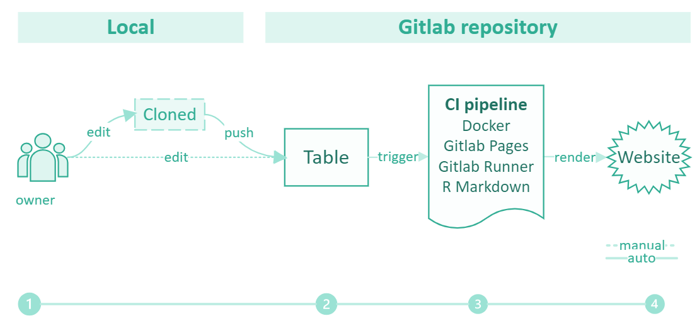

Tutorial 2: Creating and Updating a Data Hub in Gitlab
The static web site generated through the Data Hub repository contains an interactive table with clickable image thumbnails. The web site is static because the user will just see whatever data is contained in the HTML of the site. Although it contains an interactive table, all users have access to the same data which they cannot modify (unlike in dynamic websites).
The website is hosted directly from the repository through Gitlab pages. It is rendered based on an R Markdown script, that uses the Data Tables package. The script creates an interactive page in HTML. Gitlab CI is used to run the R Markdown script automatically at each update (push) and renders the site automatically so that users do not need to install R or other programs to update the site.
Workflow for data owners
1. ACTION: Data owner creates Data Hub repository
–> NOTE EF, THIS STEP IS MISSING: see the title of this tutorial! Refer to Tutorial 1? I take the sections that were at the bottom here
Necessary files
The main input files for the Data Hub repository are:
metadata table(preferably in .csv format for interoperability). It should contain just the filenames and meta data of the pictures that will be displayed on the Data Hub.imagefiles. Note: Gitlab is not meant for data storage. Images should be compressed to avoid exceeding the volume allowed per repository ( usually 5 Gb in free versions, details here)R markdownscript containing the code to render the interactive table.gitlab-ci.ymlfile specifying the Continuous Integration pipeline, see below.
The outputs of the Continuous Integration pipeline are
index.htmlfile within the folderpublic. This is the landing page of the Data Hub.- A folder
fileswill be created if the table is rendered as self-contained –> NOTE EF: do we need this?
–> NOTE EF we need to discuss this Note: index.html and images folder ARE EXPECTED to be saved in the public folder. This does not mean they are publicly accessible (you need login to access this site)
Privacy
This is a private repository and a private site
- Accounts. A
SWITCHaccount is required to access the static website and the repository with the code to generate it - Members. A
maintainermember in this repository can add new members (Go to Manage/Members). They must be also maintainer to be able to access the images after clicking on the table thumbnail.Guestscan only see the thumbnails –> NOTE EF end discuss
NOTE FOR PICTURE: the arrows are not consistent with the legend. 
2. ACTION: Owner edits metadata
The owner can do this through:
- Browser: Making changes in the repository in the browser (upload or edit file). This approach is recommended for minor changes.
- Clone repository: Cloning the Data Hub repository, making changes locally and committing and pushing the changes to Gitlab (e.g., using Github desktop). The local meta data file should always be synchronized with the master copy in the remote repository. This approach is recommended for major changes.
3. AUTO: changes in the repository trigger the Continuous Integration pipeline
After pushing changes to the Data Hub repository the Continuous Integration pipeline is triggered automatically. It may take around 5 minutes to update the web site. A team member with at least maintainer status can click on Build/Pipelines or Jobs (sidebar in Gitlab) to see what pipeline or job (within pipeline) is running, and if there are any errors.
4. AUTO: the Continuous Integration pipeline runs the script
The .gitlab-ci.yml file defines the pipeline. It uses a Docker image containing R and a shared runner on the Gitlab server to run the Rmarkdown script on the Docker image. Gitlab pages is then used to host the website. The repository owner can edit the yml file and the Rmarkdown file to make changes to this workflow. Editing of the of the Docker image is not needed.
See our tutorial on customizing Gitlab Continuous Integration for more advanced details.